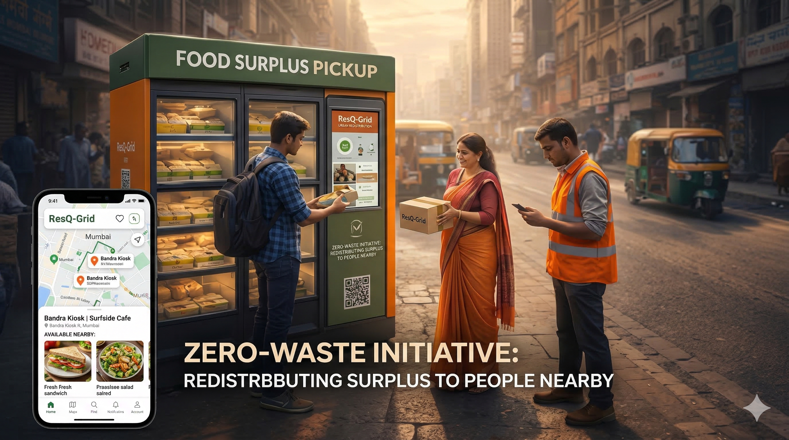

ResQ-Grid is an AI-driven hyperlocal infrastructure system designed to eliminate urban food waste by connecting surplus supply to immediate demand in real-time.

Mumbai and Delhi produce metric tons of organic waste daily while demand for affordable quality food reaches an all-time high. The bridge is missing.
Of all food produced in India is wasted before it reaches the consumer.
Traditional NGOs lack the cold-chain and tech-stack to move surplus fast enough.
Restaurants lose billions in potential recovery value on unsold inventory.
We deploy "Smart Pickup Grids"—automated, temperature-controlled redistribution hubs located in high-density urban corridors.
Merchant logs surplus via App.
AI notifies nearby users instantly.
Food moved to ResQ-Grid Hub.
User unlocks locker via QR code.
We are currently accepting inquiries for our Series A funding round and strategic partnerships in Mumbai and Delhi.